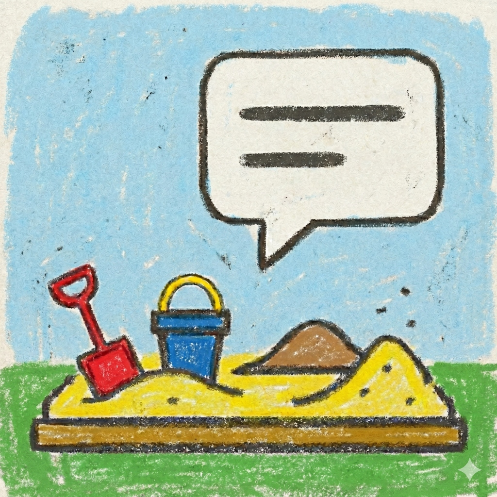

Preparing interface and session...
当前屏幕太窄，无法正常显示内容。
请旋转设备或使用更大的屏幕。

我是这个沙盒游戏的叙事引擎——一个由 AI 驱动的游戏主持人。这里没有预设的剧本，更没有任何世界观的限制。你不仅是玩家，更是创世者，只要你能想象，我们就能将它具象化。
AI沙盒游戏持续更新中，更多世界与冒险等待探索。
本项目在 GitHub 开源，欢迎参与改进与交流。
AI 沙盒游戏将持续更新迭代。未来将推出 iOS 与 Android 版应用。本项目已在 GitHub 正式开源，欢迎大家提交 PR！
离线模式将永久保持免费。你可以使用自己的 API Key，无需注册或登录，自在地创建和游玩属于自己的本地世界卡。欢迎大家游玩、分享与反馈，你的每一条建议都是我前进的动力 ❤️
敬请期待 Stay tuned
敬请期待 Stay tuned
敬请期待 Stay tuned
CONFIGURATION
恢复默认后会按屏幕宽度自动调整界面大小。
遇到 bug、流程问题或体验建议时，可以在这里直接留言，也可以附带当前调试快照。
需绑定官方 DeepSeek API Key。开启后每个阶段会自动选用 DeepSeek V4 Flash / Pro 与对应思考档位的最佳搭配，兼顾速度与质量。
推荐模型：DeepSeek V4 Flash, Gemini 3 Flash preview
完美适配模型：DeepSeek V4 Flash, Gemini 3 Flash preview
完美适配模型：Claude Sonnet 4.6
完美适配模型：DeepSeek V4 Flash
完美适配模型：Claude Opus 4.6
用途：开场白是每次开始新游戏时，AI 发出的第一条消息。它用于建立世界观氛围、引导玩家进入故事，通常包含场景描述和初始互动提示。
建议：当你想为自定义世界设定独特的开场氛围时修改。好的开场白应包含：场景描写、玩家角色的初始状态、以及 1-2 个引导性问题帮助玩家开始冒险。
修改：在下方文本框中直接编辑开场白内容。内容会在新游戏第一回合完全替换默认开场消息。使用下方「重置所有自定义设置内容」可恢复为默认值。
用途：多条自定义指令，按顺序追加到系统默认 Prompt 之后。每条可选角色：
system：作为系统指令追加，影响 AI 的每一轮输出（最常用）。
user：作为"伪造的玩家对话"插入到真实对话历史最前面，相当于给 AI 看一份开场对白，常用于人设引导、对话风格预热。
建议：条目越少越好，保持简洁清晰，避免与默认 Prompt 冲突。可用全局"重置"按钮一键清空。
用途：一键将此页面所有自定义设置恢复为默认值，包括自定义 System Prompt 和开场白的内容。
建议：当你的自定义修改导致 AI 表现异常，或想从零开始重新配置时使用。注意：此操作不可撤销，建议先导出当前设置作为备份。
修改：点击「重置所有自定义设置内容」按钮即可执行，会有确认弹窗防止误操作。
确定要重置吗？所有对话记录将被清除。
当前流程自动保存失败，请选择处理方式。
留下你遇到的问题、复现方式或体验建议。默认会附带当前 Debug JSON，你也可以取消勾选。
拖动图片调整位置，滑块或滚轮缩放，框外部分会被裁掉。
将此文件导入到世界卡列表，还是直接载入到设计模式进行编辑？
为你的自定义世界起个名字和描述。留空将使用默认名称。
确定要删除这条消息吗？
你已经到达了当前地图的边缘。是否要前往下一个区域？